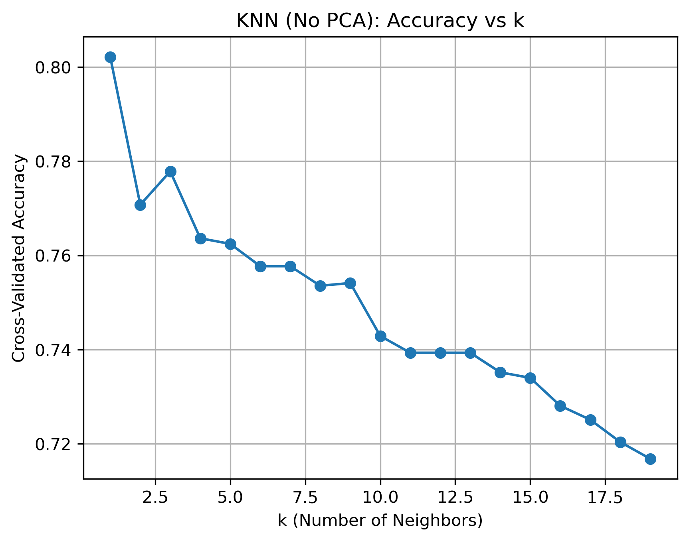
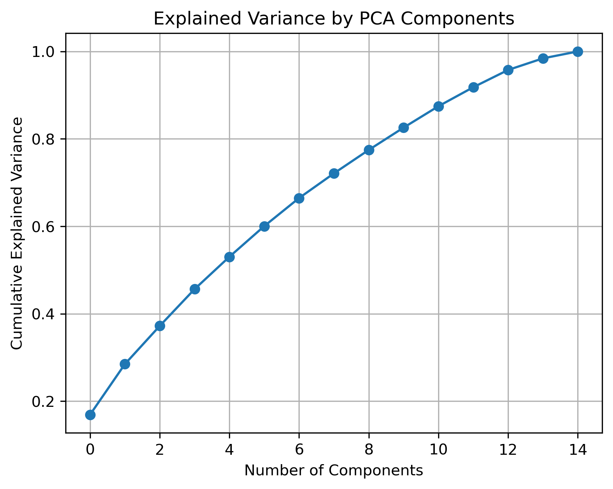
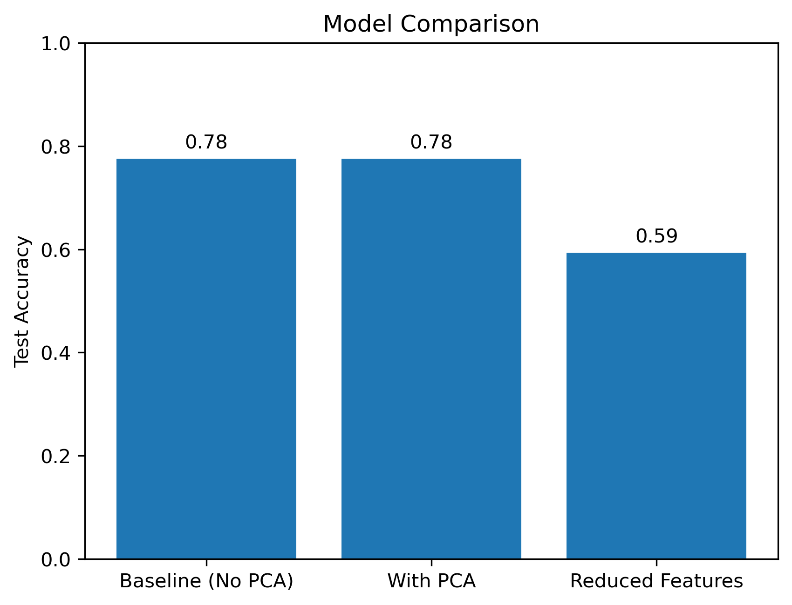
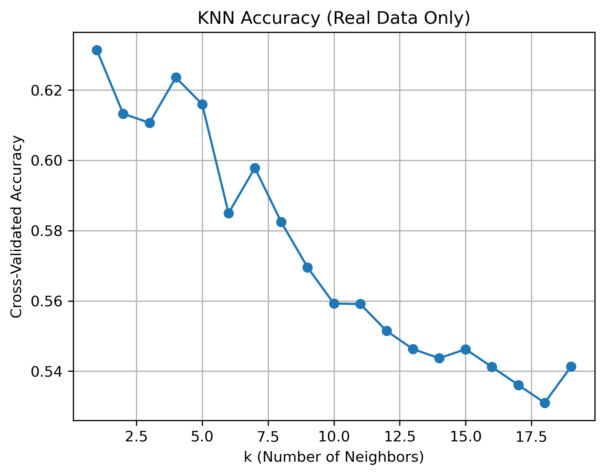
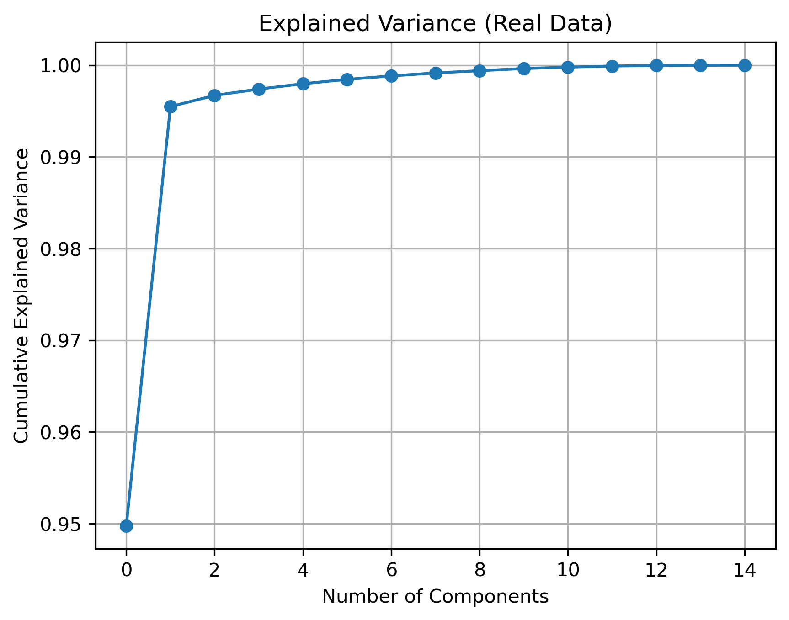
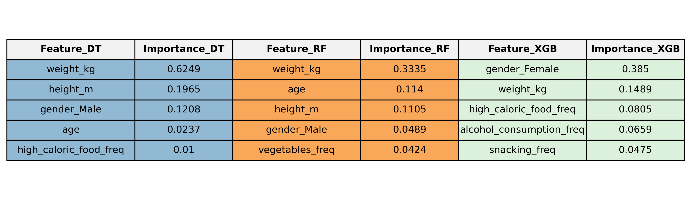
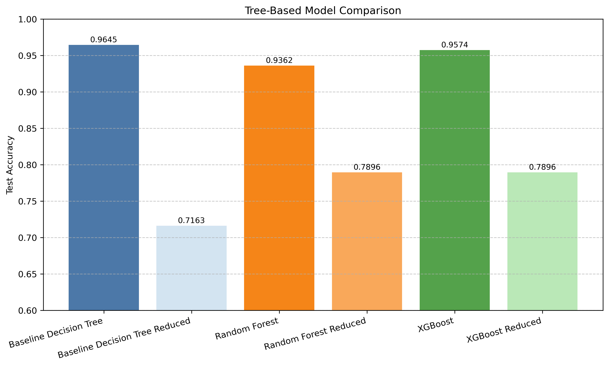

Final Report
Machine Learning · Spring 2025
Authors
Nadine Daum · Jasmin Mehnert · Ashley Razo · Nicolas Reichardt
GitHub: https://github.com/nicolasreichardt/ml-project-obesity-prediction
Submission: 23 May 2025
This project applies supervised machine learning to classify individuals into obesity risk categories based on biometric and lifestyle data. We implemented and evaluated multiple models — including logistic regression, KNN, tree-based models, and a neural network — using a shared preprocessed dataset to ensure consistent and fair comparison.
Our best-performing models achieved test accuracy scores above 85%, with interpretable insights from tree-based approaches and strong generalization from the neural network.
This project aims to classify individuals into seven obesity risk categories based on various biometric and behavioral factors. Using a labeled dataset of 2,111 individuals from Mexico, Peru, and Colombia, our models predict obesity levels ranging from Insufficient Weight to Obesity Type III.
The goal is to explore how well machine learning models can predict obesity status — and how these predictions might support future public health decisions, risk assessment tools, or individual recommendations.
GitHub repo: nicolasreichardt/ml-project-obesity-prediction
We used the Obesity Levels Estimation Dataset, which contains demographic, behavioral, and biometric data for 2,111 individuals from Mexico, Peru, and Colombia. The dataset was designed for multi-class classification and is labeled with 7 obesity categories.
obesity_level with 7 classes:
The data was collected via a cross-sectional survey and is publicly available on Kaggle, supported by this research article.
üìí Notebook: notebooks/EDA.ipynb
Our EDA revealed several interesting patterns in the dataset. Weight exhibited a strong bimodal distribution and was the most predictive feature for distinguishing obesity levels. As expected, higher weight values were clearly associated with higher obesity categories, while height showed minimal variation across groups.
Among the numerical features, age was slightly right-skewed, with a concentration of younger individuals, and showed a mild upward trend in older age groups within higher obesity levels. Several categorical features (e.g., smokes, calorie_tracking) were imbalanced, while lifestyle-related variables like vegetables_freq and physical_activity_freq displayed greater diversity.
Correlation analysis supported these insights: weight had strong positive correlations with Obesity_Type_I and Obesity_Type_II, and a negative correlation with Normal_Weight. Behavioral factors such as vegetable intake, snacking, and screen time showed moderate correlations, suggesting their relevance when combined in a predictive model.

All team members used a shared train/test split to ensure model comparability.
Before modeling, the dataset required thorough cleaning and transformation. This step was led primarily by Ashley Razo and Jasmin Mehnert, with feedback and reviews from all team members.
obesity_levelgender, transport_mode)StandardScaler to normalize all numerical features (e.g., age, height_m, weight_kg).csv and .feather (for faster access)üìù @Ashley ‚Äì feel free to insert 1‚Äì2 sentences on your preprocessing pipeline: decisions around feature selection, encoding strategies, or challenges during cleaning
The preprocessing pipeline ensured consistency and cleanliness of the dataset ahead of modeling. Initially, inconsistencies in categorical encodings were resolved by harmonizing all variables into either clean categorical or numeric formats. Several ordinal features contained unexpected decimal values, likely due to synthetic oversampling (SMOTE). These were systematically rounded to the nearest valid categories and mapped back to interpretable labels, informed by the original survey structure.
All column names were renamed for clarity and uniformity, and a comprehensive data dictionary was created to document question wording and response options. Categorical features were converted to the appropriate category type, while numerical variables were explicitly cast as floats.
üìí Notebook: notebooks/preprocessing.ipynb
üßæ Script: processed_data/data_preparation.py
All models consumed the same cleaned and scaled training and testing data.
All models used the same preprocessed data for consistency.
üìí logistic_regression.ipynb
üìí ridge_logistic_regression.ipynb
üìí PCA_KNN.ipynb
This notebook investigates how dimensionality reduction with Principal Component Analysis (PCA) affects the performance of a K-Nearest Neighbors (KNN) classifier in predicting obesity levels. Four variations of KNN were trained and evaluated:
The best overall test accuracy (0.78) was achieved no matter whether we used PCA. On the full dataset, PCA preserved nearly all variance but did not improve performance over the baseline. The reduced feature model performed significantly worse. Below is a more detailed overview of each approach and its outcomes.
Before model training, a careful encoding approach was applied to ensure distance metrics used by KNN remained meaningful:
vegetables_freq, physical_activity_freq) were encoded using manually defined, meaningful level orderings (e.g., Never < Sometimes < Always)This ordinal encoding preserved structure while avoiding the sparsity of one-hot encoding. This is particularly important for KNN, as high-dimensionality can dilute the distance signal.
The baseline KNN was trained on all scaled features (excluding transport_mode, which had weak correlations with obesity level). The model was tuned via 5-fold cross-validation across values of ( k ). The best model used:

The high performance at ( k = 1 ) could be explained by the use of SMOTE, which creates synthetic clusters with very tight proximity between samples of the same class. As a result, the nearest neighbor often shares the correct label, while increasing ( k ) introduces less similar neighbors and reduces accuracy.
Dimensionality reduction was implemented using a pipeline that included PCA followed by KNN, evaluated using grid search with cross-validation. The best configuration was:

The number of features got not reduced, therefore PCA preserved all variance from the original data. As a result, model performance remained unchanged. This suggests PCA did not effectively compress the input space.
To avoid target leakage, we removed the features weight_kg and height_m, as the target variable (BMI-based obesity level) is directly derived from them via the BMI formula. Including these features would allow the model to trivially reconstruct the label. The final model used:


This performance drop is expected. However, this version focuses on modifiable lifestyle variables, which are more suitable for public health use cases, as they can be self-reported, less privacy sensitive and can be targeted through interventions.
To assess generalizability, the model was re-evaluated on a 23% subset of non-synthetic data. The best KNN+PCA model achieved:


This confirms that PCA can be effective in real-world scenarios, helping to reduce noise and correlation while preserving essential structure.
A 3D PCA plot was generated using the first three components. Original features were projected as black arrows to indicate their influence on component directions. Visual inspection showed:

üìí neural_network.ipynb
This notebook implements a multi-layer feedforward neural network for classifying individuals into one of seven obesity categories. The model was built using Keras with a TensorFlow backend and trained on the shared, preprocessed dataset.
Neural networks require all inputs to be numeric and appropriately scaled. To meet this requirement:
age, height_m, and weight_kg were standardized using StandardScaler, which centers the data and scales to unit variance.The model architecture consisted of:
The model was trained using:
categorical_crossentropyAdamobesity_levelThe model was trained on the shared training set (train_data.feather) and evaluated on the standard test set. The training history showed stable convergence of both loss and accuracy, with validation metrics closely tracking the training metrics:
No signs of overfitting were observed, likely due to dropout regularization and standardized inputs.
The neural network achieved a test accuracy of 83.9%, making it one of the best-performing models in the overall comparison.
Class-level performance was assessed using a confusion matrix:

The model showed strong predictive ability across most classes, with misclassifications primarily occurring between adjacent categories (e.g., Normal Weight and Overweight Level I/II). Performance was especially strong in more distinct categories such as Obesity Type III and Insufficient Weight.
Strengths:
Limitations:
This notebook investigated the use of tree-based machine learning models to classify obesity levels in individuals. Three models were trained and evaluated:
The best overall test accuracy was achieved by the Baseline Decision Tree, with a score of 0.9611. The XGBoost Classifier followed closely with a test accuracy of 0.9574. The Random Forest Classifier achieved a test accuracy of 0.936. These results show that all three models performed exceptionally well. Below is a more detailed overview of each model and its outcomes.
The Decision Tree model was trained using a pipeline that incorporated preprocessing and grid search for hyperparameter tuning. The best model used:
This configuration produced a cross-validation accuracy of 0.9479 and a test accuracy of 0.9611, suggesting that the model generalized very well to unseen data — to an extent that even outperformed its validation score, which is atypical and discussed further in the comparison section.
In terms of feature importance, biometric features dominated the predictions:
Lifestyle-related features such as “high caloric food intake” played a significantly lesser role.
The Random Forest model was also trained using a pipeline with preprocessing and 5-fold cross-validation. The optimal configuration from grid search was:
With these settings, the model achieved a cross-validation accuracy of approximately 0.935 and a test accuracy of 0.936. These results again indicate good generalization with very similar performance on both validation and test sets.
The feature importances mirrored those found in the Decision Tree model. Weight, height, age, and gender were the top features, while lifestyle-related variables (e.g., "vegetables_freq") had relatively low importance.
Disclaimer:
The XGBoost model was also trained using a pipeline with preprocessing and 5-fold cross-validation. The best model parameters were:
This configuration resulted in the highest cross-validation accuracy of 0.9668, indicating that the model fit the training data extremely well. However, the test accuracy dropped slightly to 0.9574, just below the baseline Decision Tree model.
Interestingly, the XGBoost model’s feature importances showed a different pattern:
The following section will compare and offer an interpretation of these results and the feature importances.
| Model | Test Accuracy | Notes |
|---|---|---|
| Logistic Regression | ~XX% | Simple, interpretable |
| Ridge Logistic Regression | ~XX% | Slight improvement with regularization |
| KNN | ~XX% | Better with PCA |
| Neural Network | 83.9% | Strong generalization |
| Baseline Decision Tree | 96.45% | XXX |
| Random Forest | 93.62% | XXX |
| XGBoost | 95.74% | XXX |
We will now compare our three best-performing models:
Let's first remind ourselves of the test accuracy of our three models with the following plot.

In the plot above, we observed that our baseline Decision Tree classifier outperformed the more complex models—Random Forest and XGBoost. Nevertheless, all three models performed exceptionally well in terms of accuracy.
The superior performance of the Decision Tree is not entirely surprising. The relationship between the features and the target variable appears to be relatively simple, allowing for decision boundaries that can be effectively captured by straightforward, rule-based splits. This is particularly true for the predictors "weight" and "height", which directly influence the target variable.
As discussed further in the feature importance section, both height and weight are used to compute the Body Mass Index (BMI), which forms the basis for the obesity classification labels in our target variable. Consequently, these features hold a dominant predictive influence.
While Decision Trees are designed to select and split on features based on their immediate predictive power, Random Forests and XGBoost attempt to model more complex, non-linear interactions among features. This added complexity may actually reduce their performance in a task where a few features dominate the predictive signal. This could explain why our simpler Decision Tree model outperformed the more advanced ensemble methods in this particular case.
We observed very high testing accuracy and high training/validation accuracy across all three models. In the Decision Tree Classifier and Random Forest Classifier, the test accuracy was even higher than the training/validation accuracy—an outcome that is quite uncommon and unexpected.
Based on these results, we can exclude the possibility that our models were overfitting. However, this pattern revealed two important issues within the dataset:
These factors highlight potential limitations in model evaluation and suggest caution when interpreting the performance metrics at face value.
Now, we can compare the feature importances of our three models. Let's remind ourselves of the most important features for each model with the following table.

As highlighted in the individual model analyses, biometric features such as weight, height, age, and gender consistently emerged as the most important predictors across all three models. These variables were especially dominant in the Decision Tree and Random Forest models, where they significantly outweighed lifestyle-related variables in their contribution to model accuracy.
However, it is precisely the lifestyle features—such as dietary habits, physical activity, alcohol consumption, and snacking frequency—that are of greatest interest from a public health and policy perspective. Understanding the influence of these modifiable behaviors is essential for designing effective interventions to combat rising global obesity rates. Unfortunately, their predictive power was masked in the initial models by the overwhelming influence of weight and height, which are used to compute BMI—the very basis of the obesity classification used as our target label.
This creates a circular relationship in the model: we use BMI to define obesity levels, and then predict those levels primarily using the features from which BMI is derived. To break this dependency and gain a more policy-relevant understanding of behavioral factors, we re-ran all three models—Decision Tree, Random Forest, and XGBoost—excluding the weight and height predictors. The results are shown below (in the feature exclusion section).
It is also notable that the XGBoost model’s feature importance rankings differed significantly from those of the Decision Tree and Random Forest models, even in the full-feature setting. Specifically, features such as "height" and "age" were not among the top predictors in XGBoost, despite being highly ranked in the other two models. This discrepancy is likely due to how these algorithms handle correlated or redundant features.

As expected, removing the "height" and "weight" features caused a significant drop in model performance. The baseline Decision Tree's accuracy decreased from 0.965 to 0.716, the Random Forest's dropped from 0.936 to 0.79, and the XGBoost model fell from 0.957 to 0.79. These reductions limited the models' accuracy and practical utility.
Notably, both the Random Forest and XGBoost models achieved identical test accuracy. After verifying data splits, preprocessing, and label encodng, we showed that although their overall accuracy was the same, the models made different individual predictions and exhibited distinct class-level behavior. For more details, please visit the tree-based notebook.
Other lifestyle factors, such as "snacking frequency," "vegetable intake," and "physical exercise," showed some predictive power for obesity classes. However, their predictive ability was way lower than that of height and weight in our previous models.
THIS PART NEEDS TO BE REVISED IMHO (Nico)
processed_data/obesity_cleaned.csvprocessed_data/train_data.featherprocessed_data/test_data.feathernotebooks/plots/